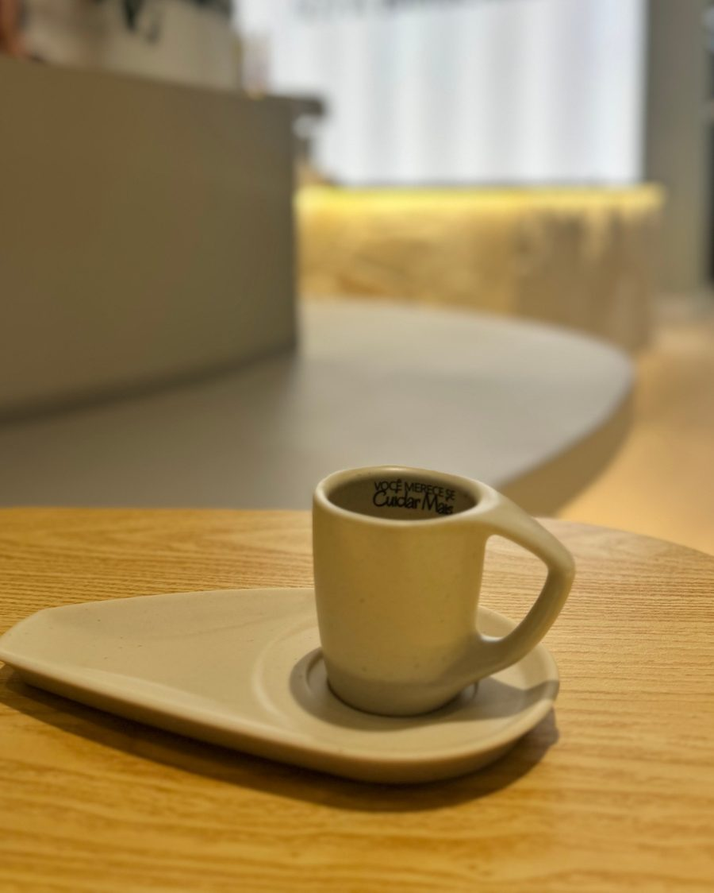
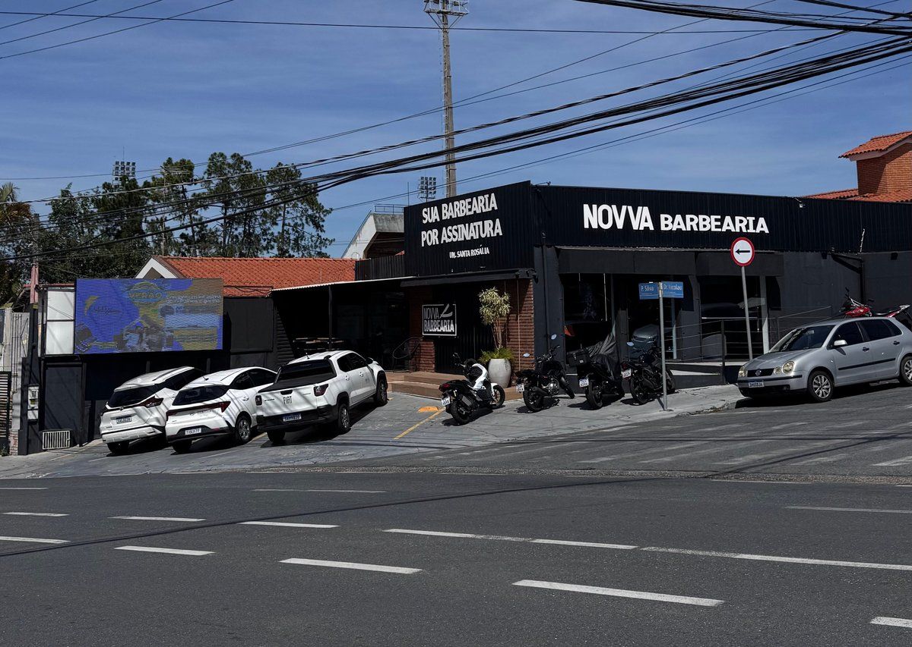
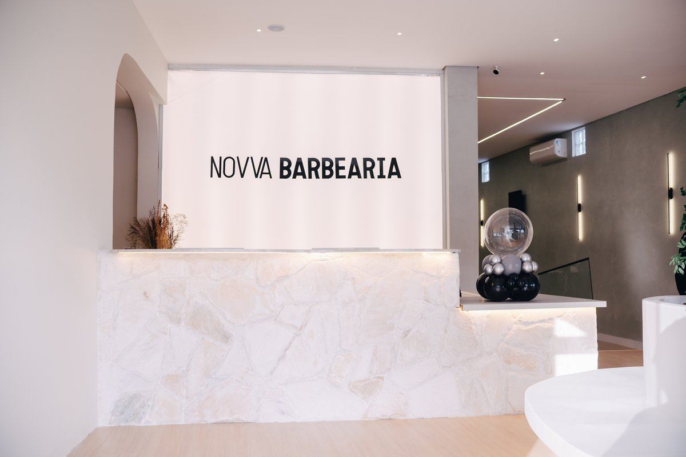

01
O Lavatório
A pausa começa aqui. Recoste, feche os olhos e deixe a massagem capilar dissolver, uma a uma, as tensões do dia. Água morna, mãos atentas — o alívio que você merecia desde cedo.
Massagem capilar relaxante

O mundo lá fora corre.


Aqui, o tempo desacelera.
Entre o barulho e a pressa, um lugar para respirar.


Cada detalhe pensado para que você receba o que há de mais excelente.
Você merece se cuidar mais.
A pausa começa aqui. Recoste, feche os olhos e deixe a massagem capilar dissolver, uma a uma, as tensões do dia. Água morna, mãos atentas — o alívio que você merecia desde cedo.
Atendimento exclusivo com profissionais que leem o seu rosto antes de pegar a tesoura. O corte certo para o seu estilo, executado com precisão e sem pressa — porque detalhe faz toda a diferença.

Toalha quente, espuma perfumada, navalha precisa. Uma sequência de sensações que transforma a barba em cerimônia — e cada visita em algo que você vai querer repetir.

Av. Pereira da Silva, 803 — Jardim Santa Rosália, Sorocaba/SP
R. Vinte e Oito de Outubro, 120 · Loja 5 — Alto da Boa Vista, Sorocaba/SP
Av. Gisele Constantino, 1238 — em frente ao Mercadão Campolim, Sorocaba/SP


